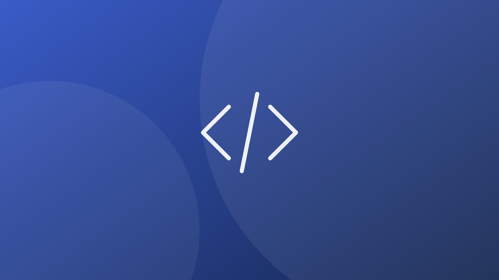
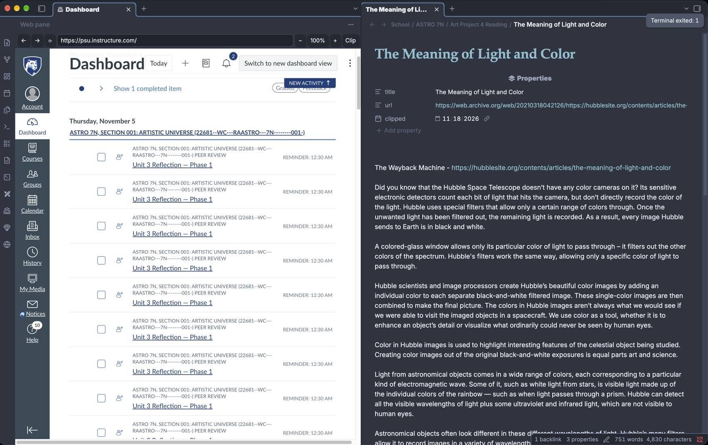

Two TypeScript plugins I wrote for Obsidian, for my own use.


I take notes in Obsidian and my Penn State courses live in Canvas, so I wanted both in one window to make the most of my screen. Every existing plugin I tried failed at login, because Canvas's OAuth sign-in relies on a popup that they could not handle. So I built my own plugin that works around the popup problem. Canvas now runs inside an Obsidian pane.
A second plugin turns a note into a read-along. It generates narration with the ElevenLabs API and highlights each sentence as it is read aloud.